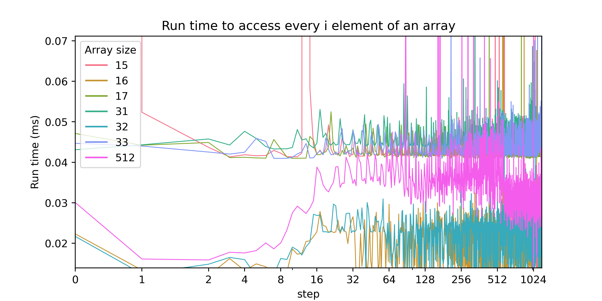
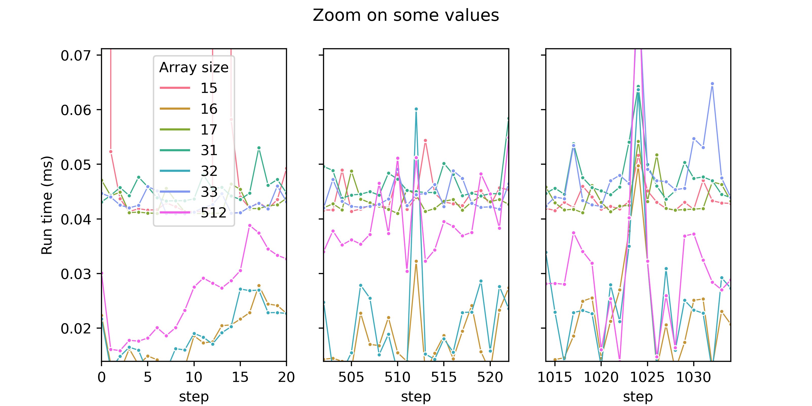

This repository is strongly inspired by:
In C++, a variable can not be smaller that the size of a char
#include <iostream>
#include <typeinfo>
#include <map>
#include <string>
/*! \brief Display the size and the alignement of a given type */
template <typename T> void show_size_and_alignment();
struct S_dbb { double b; bool a; bool c; };
struct S_bdb { bool a; double b; bool c; };
struct S_b1d { bool b1[1]; double b; };
struct S_b8d { bool b8[8]; double b; };
struct S_b9d { bool b9[9]; double b; };
void show_table_header();
template<typename T, typename... Args> void show_sizes_and_alignments();
void show_sizes_and_alignments(){};
int main()
{
std::cout << std::string(50,'-') << std::endl;
show_table_header();
show_sizes_and_alignments<bool, char, short, int, float, double>();
show_table_header();
show_sizes_and_alignments<S_bdb, S_dbb, S_b1d, S_b8d, S_b9d>();
std::cout << std::string(50,'-')<< std::endl;
return 0;
}
// Helper functions //
const char* sep = "\t| ";
const std::map<std::string, std::string> type_name = {
{typeid(double).name(), "double"},
{typeid(short).name(), "short"},
{typeid(float).name(), "float"},
{typeid(int).name(), "int"},
{typeid(char).name(), "char"},
{typeid(bool).name(), "bool"}};
template <typename T>
std::string get_typename() {
const std::string key{typeid(T).name()};
auto it = type_name.find(key);
if(it!=type_name.end()){
return it->second;
}
return key;
}
template <typename T>
void show_size_and_alignment()
{
const int nb_white_space = std::max<int>(0 ,8-get_typename<T>().size());
const std::string whitespaces(nb_white_space , ' ');
std::cout << " "<< get_typename<T>() << whitespaces << sep <<sizeof(T) << " \t" <<sep << alignof(T) << std::endl;
}
template<typename Arg, typename... Args>
void show_sizes_and_alignments(){
show_size_and_alignment<Arg>();
(show_sizes_and_alignments<Args>(),...);
}
void show_table_header()
{
std::cout << "\nTYPE\t" << sep << "sizeof" << sep << "alignof" << std::endl;
}--------------------------------------------------
TYPE | sizeof | alignof
bool | 1 | 1
char | 1 | 1
short | 2 | 2
int | 4 | 4
float | 4 | 4
double | 8 | 8
TYPE | sizeof | alignof
5S_bdb | 24 | 8
5S_dbb | 16 | 8
5S_b1d | 16 | 8
5S_b8d | 16 | 8
5S_b9d | 24 | 8
--------------------------------------------------
TODO m_alignement.svg
#pragma once
#include <vector>
#include <assert.h>
namespace cache
{
template <typename T>
void touche_every_step(
std::vector<T>& vecElem,
std::size_t delta,
std::size_t nb_touch)
{
assert(nb_touch*delta < vecElem.size());
for (std::size_t i = 0; i < nb_touch; i++)
vecElem[i * delta] += 1;
}
} // namespace cacheArchitecture: x86_64
CPU op-mode(s): 32-bit, 64-bit
Byte Order: Little Endian
CPU(s): 4
On-line CPU(s) list: 0-3
Thread(s) per core: 2
Core(s) per socket: 2
NUMA node(s): 1
Vendor ID: GenuineIntel
Model name: Intel(R) Core(TM) i7-4510U CPU @ 2.00GHz
Stepping: 1
Virtualization: VT-x
L1d cache: 32K
L1i cache: 32K
L2 cache: 256K
L3 cache: 4096K 